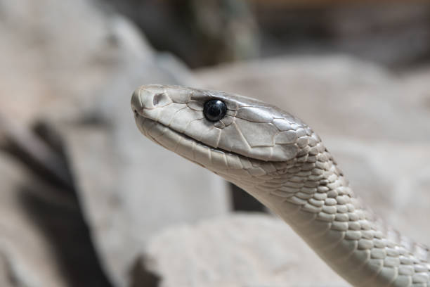
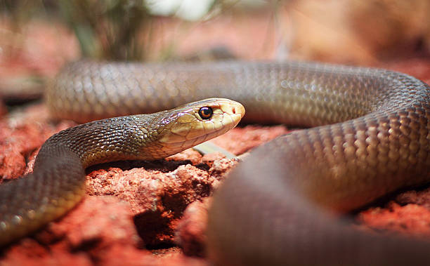

| KINGDOM | Animalia |
| PHYLUM | Chordata |
| SUBPHYLUM | Vertebrata |
| CLASS | Reptilia |
| ORDER | Squamata |
| INFRAORDER | Serpentes |
| FAMILY | Elapidae |
| GENUS | Dendroaspis |
| SPECIES | Dendroaspis polylepis |
The Black mamba is an extremely venomous snake native to parts of sub-Saharan Africa. It is the second-longest venomous snake after the King cobra. Black mambas have a coffin-shaped head with a somewhat pronounced brow ridge and a medium-sized eye.
These snakes vary considerably in color, including olive, yellowish-brown, khaki, and gunmetal but are rarely black. The scales of some individuals may have a purplish sheen. Black mambas have greyish-white underbellies and the inside of the mouth is dark bluish-grey to nearly black.
Mamba eyes range between greyish-brown and shades of black; the pupil is surrounded by a silvery-white or yellow color. Juvenile snakes are lighter in color than adults; these are typically grey or olive green and darken as they age.
|  | |
|  |
Black mambas are both terrestrial and arboreal creatures. On the ground, they move with their head and neck raised, and typically use termite mounds, abandoned burrows, rock crevices, and tree cracks as shelter. Black mambas are solitary; they are diurnal and tend to bask in the morning and again in the afternoon.
They may return daily to the same basking site. Skittish and often unpredictable, Black mambas are agile and can move quickly. In the wild, they seldom tolerate humans approaching more closely than about 40 meters (130 ft). When mambas perceive a threat, they retreat into the brush or a hole. When confronted they are likely to engage in a threat display, gaping to expose their black mouth and flicking their tongue.
They may also hiss and spread their neck-flap. During the threat display, any sudden movement by the intruder may provoke the snake into performing a series of rapid strikes, leading to severe envenomation. The Black mamba's reputation for being ready to attack is exaggerated; it is usually provoked by perceived threats such as the blocking of its movements and ability to retreat.
Black mambas are carnivores and mostly prey on small vertebrates such as birds, particularly nestlings and fledglings, and small mammals like rodents, bats, hyraxes, and bushbabies. They generally prefer warm-blooded prey but will also consume other snakes.
Black mambas are polygynandrous (promiscuous); this means that both males and females mate with multiple partners. The breeding season spans from September to February. Rival males compete by wrestling, attempting to subdue each other by intertwining their bodies and wrestling with their necks.
During mating, the male will slither over the dorsal side of the female while flicking its tongue. The female will signal its readiness to mate by lifting its tail and staying still. Black mambas are oviparous; females lay a clutch of 6-17 eggs. The eggs are elongated oval in shape, typically 60-80 mm (2.4-3.1 in) long and 30-36 mm (1.2-1.4 in) in diameter.
Incubation lasts around 2 to 3 months. When hatched, the young range from 40-60 cm (16-24 in) in length. They are independent directly from birth and have to be able to care for themselves. Snakelets may grow quickly, reaching 2 m (6 ft 7 in) after their first year. Juvenile Black mambas are very apprehensive and can be deadly like adults.
There are no major threats to the Black mamba at present.
According to IUCN, the Black mamba is locally common and widespread throughout its range but no overall population estimate is available. Currently, this species is classified as Least Concern (LC) on the IUCN Red List and its numbers today are stable.
Black mambas play a very important ecological role in their environment as they help to control populations of small rodents they prey on.